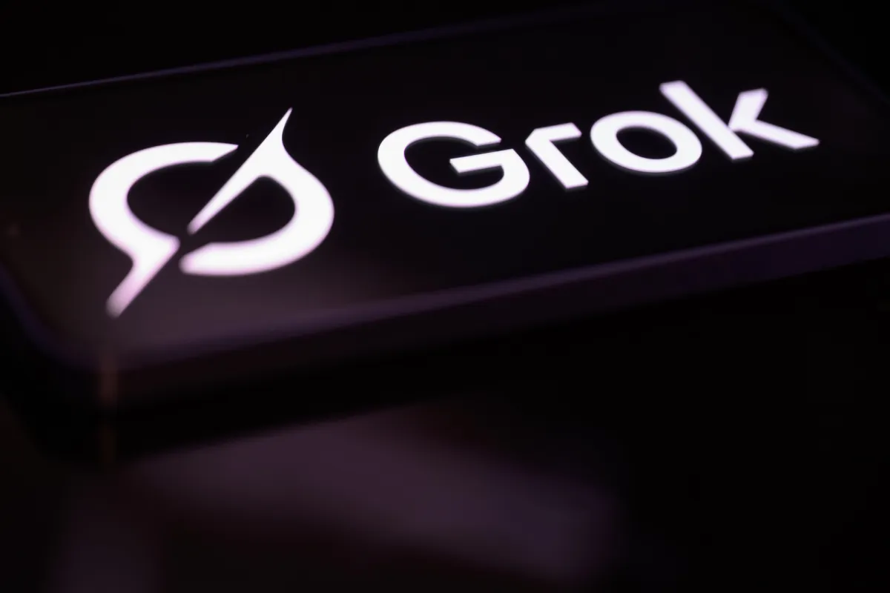
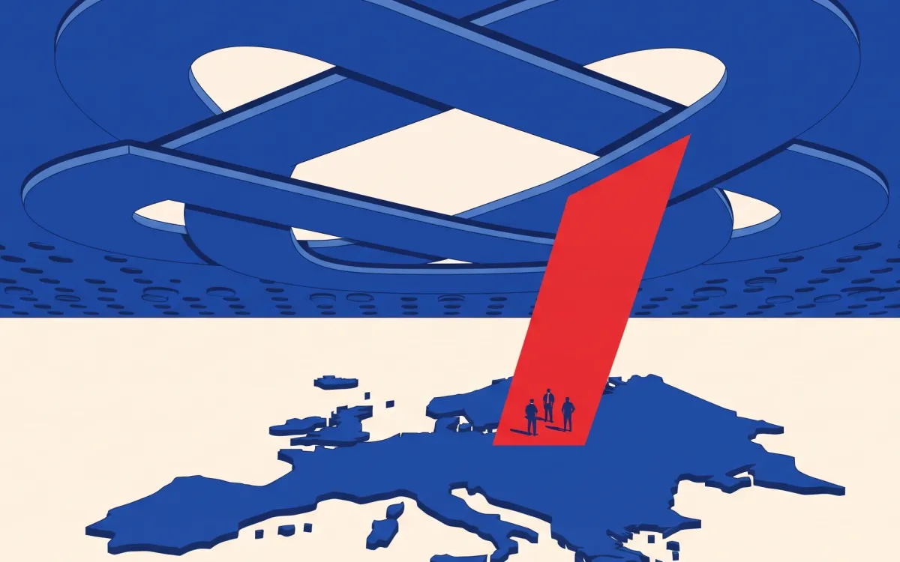
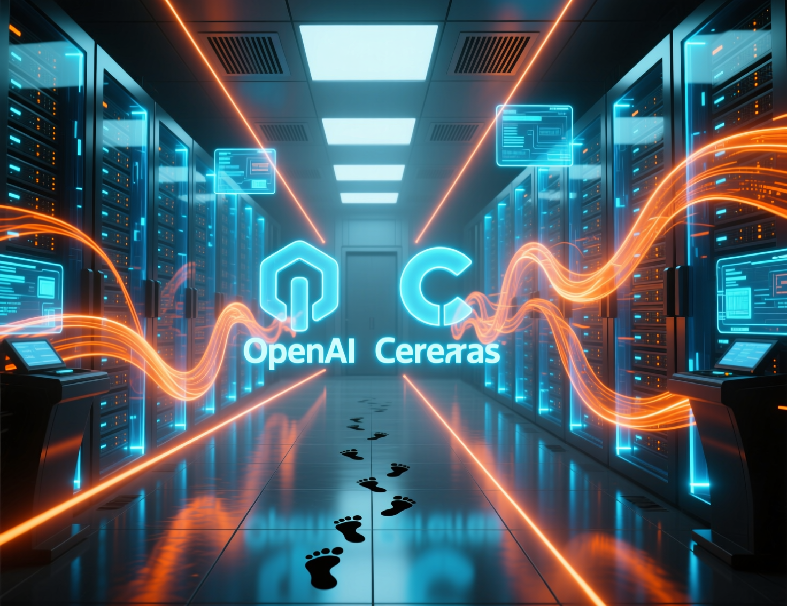
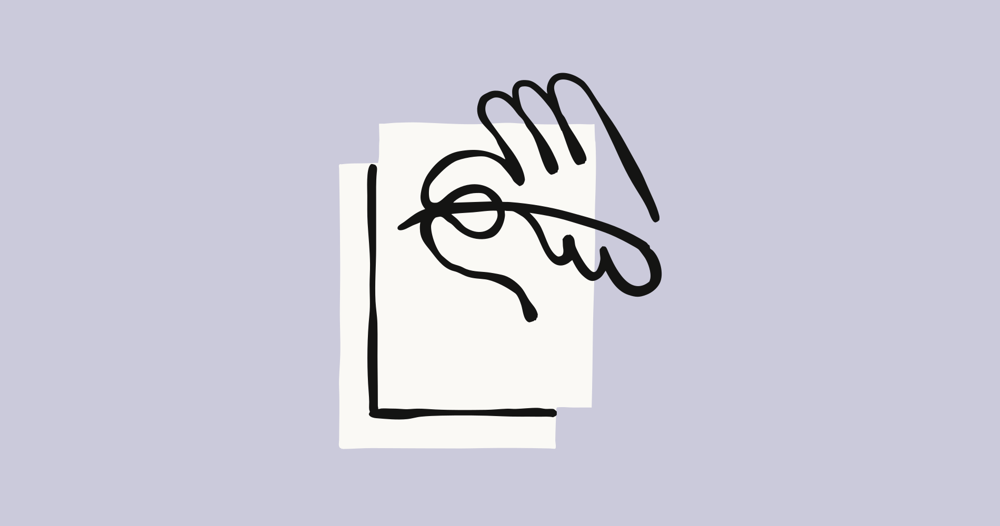
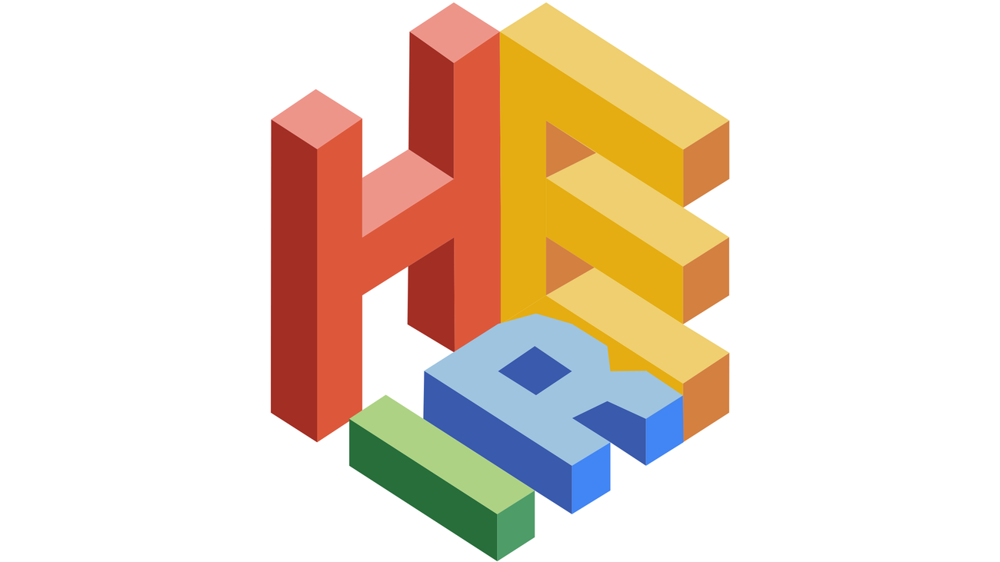
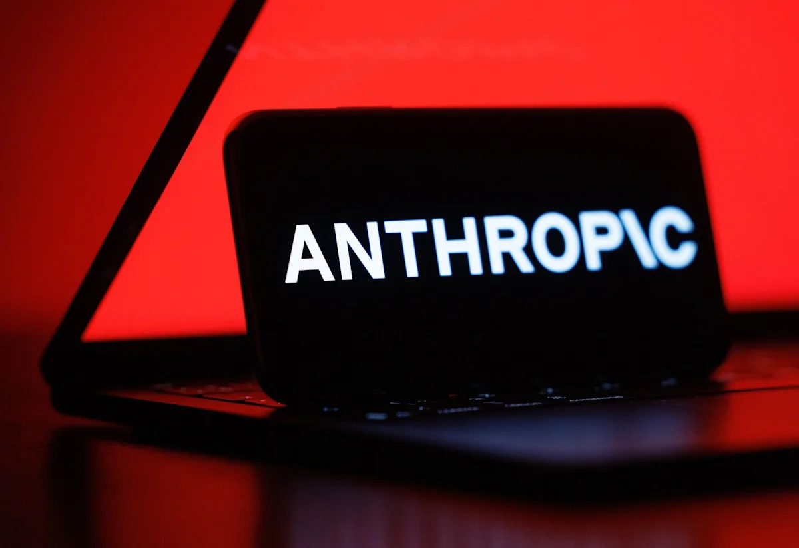

2026-08-16
VOL 320
读者，早。
另一条线更冷：Claude 文本水印、Google HEIR、ChatGPT 欧洲广告和 Grok 诉讼都在提醒同一件事，能力越像基础设施，越不能只靠一句“用户自负”过关。来源、隐私、未成年人保护、广告边界和账户安全，都会变成产品成本。

Cursor 8 月 14 日在官方博客确认，已正式被 SpaceX 收购，完成 4 月与 SpaceXAI 合作启动后的收购流程。Cursor 称，并入后将获得“世界最大 GPU 集群”的访问能力，用来训练更强、运行成本更低的模型；TechCrunch 报道称这笔交易源于 SpaceX 对 Cursor 的 600 亿美元收购选择权。

TechCrunch 8 月 15 日报道，一名化名 Jane Doe 4 的女性加入针对 xAI 的联邦诉讼。她称继父使用 Grok 将她 11 岁时的一张照片生成 7000 多张露骨图片，并在线分享交易。报道援引《华盛顿邮报》材料称，原告认为 Grok 限制较少，xAI 也未能及时回应执法部门的数据请求。
The Information 8 月 15 日称，Nvidia 正讨论向软银支持的 SB Energy 投资最高 30 亿美元。SB Energy 正开发 OpenAI 计划租用的俄亥俄 AI 数据中心园区；Investing.com 转述称，相关谈判还涉及 Nvidia 为该园区提供约 1000 亿美元信用支持，条款仍可能变化。

PPC Land 8 月 15 日报道，OpenAI Ireland 向欧洲经济区和瑞士的 Free、Go 用户发送通知，称本月晚些时候将在 ChatGPT 中展示广告，并同步更新隐私政策。报道称 Plus、Pro、Business、Enterprise 和 Education 仍保持无广告，初期定位主要基于上下文、粗略位置和设备类型，个性化广告需要用户明确同意。
Gothamist 8 月 15 日报道，限制纽约市私营企业对顾客使用人脸、虹膜、声音、指纹和步态识别的法案，已获得市长 Zohran Mamdani 政府和 51 名市议员中 28 人支持。法案还会限制第三方数据共享，并允许顾客按每次违规最高 5000 美元索赔。

Qwen 团队在 Hugging Face 发布 Qwen3.8-27B-FP8，采用 Apache 2.0 许可。模型是带视觉编码器的 27B causal language model，原生 262K 上下文，可扩展至 100 万 token；官方模型卡称它支持图像和视频理解、thinking control，并在 SWE-Bench Pro、Terminal-Bench 2.1、LiveCodeBench v6 等测试中给出明显提升。

Google 8 月 13 日发布 Gemini 3.7 Flash，定位为面向 coding 和 agents 的 workhorse model。官方称它相对 3.6 Flash 在 FrontierCode 1.1 从 34.4% 提至 43.6%，DeepSWE v1.1 从 49.0% 提至 65.3%，AutomationBench 从 17.0% 提至 30.4%；年内引入价为每百万输入 0.75 美元、输出 3.75 美元。

DeepSeek API 定价页显示，V4 系列将在 8 月 16 日 16:00 UTC 起采用峰谷计费，峰时段为 01:00-04:00 和 06:00-10:00 UTC。deepseek-v4-flash 峰时每百万 cache miss 输入 0.44 美元、输出 1.32 美元，闲时分别为 0.22 美元和 0.66 美元；V4-Pro 峰时输入 1.32 美元、输出 3.96 美元。

AI Weekly 8 月 15 日汇总 OpenAI、Cerebras 等来源称，GPT-5.6 Sol 的 Ultrafast 模式进入有限 API 预览，最高约为标准处理速度 14 倍、输出 750 token/s，由 Cerebras 提供底层推理。公开信息尚未给出价格、容量和 GA 时间，OpenAI 主要先给少数客户测试。

Anthropic 8 月 14 日解释 Claude 文本水印机制：未来 Claude 模型生成文本会包含一种读者不可见、成本中性的统计水印，不添加隐藏字符，不增加 token，也不包含可追溯到个人、组织或聊天的信息。Anthropic 称该做法是为满足 EU AI Act 和透明度实践准则，并计划提供检测 API。

Google Security Blog 8 月 14 日介绍 HEIR，即 Homomorphic Encryption Intermediate Representation。它是开源编译工具链，可将预训练 AI 模型转换为在加密输入上运行，让服务器处理密文并返回加密结果。Google 展示了推荐、信用卡欺诈检测、网络入侵检测和热词检测等示例，并与多家加密硬件公司合作。

AI Weekly 8 月 15 日转述 The Information 报道称，Mercor 等数据供应商正在接触倒闭或被收购公司的 Slack 归档、工单记录和工作流录像，用来构建训练企业代理的 reinforcement-learning gyms。报道提到供应商曾在 Warmly 被 HubSpot 收购后联系其 CEO 购买数据。
TechCrunch 8 月 15 日发布 AI 平台账号被盗排查指南，覆盖 ChatGPT、Claude 和 Perplexity。文章提醒用户检查活跃会话、登出陌生设备、开启 MFA；其中 ChatGPT 和 Perplexity 支持多因素认证，Claude 主要依赖邮箱登录链接，并提供 active sessions 管理。

Yahoo Finance 转述 Bloomberg 8 月 14 日报道，Anthropic 向投资者披露的初步二季度收入超过 115 亿美元，较 2025 年二季度 7.87 亿美元增长约 14 倍，并实现正向 adjusted operating income。报道还称，多家投行正准备潜在秋季 IPO 相关工作。
AI Weekly 8 月 15 日汇总称，Nvidia 8 月 14 日提交的 13F 文件披露，截至 6 月 30 日持有约 122.8 million 股 SpaceX，价值约 209.8 亿美元，同时持有约 299.9 亿美元 Intel 头寸。这两项合计占其 634.4 亿美元股票投资组合约 80%。

The Motley Fool 8 月 14 日报道，管道公司 ONEOK 已签署协议，为一座服务 AI 数据中心的 1GW 电厂供应天然气。报道认为这类交易可能会继续出现，因为数据中心正在把电力需求推向管道、发电和园区侧的长期合同。

今天工具位给一个该做但不花哨的动作：打开 ChatGPT 的 Settings → Security and Login → Active Sessions，Claude 的 Settings → Account → Active sessions，Perplexity 的 All settings → Sign out of all sessions。确认陌生设备后立刻登出，并给支持 MFA 的平台补上多因素认证。